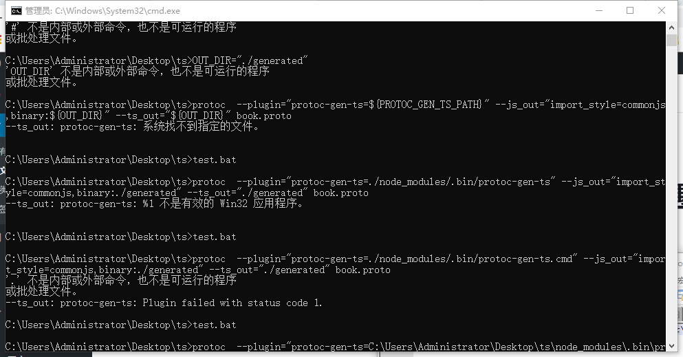

<!DOCTYPE html>
<html>
<head><meta name="generator" content="Hexo 3.9.0">
  <meta charset="utf-8">
  

  
  <title>使用ts-protoc-gen编译proto获得typescript提示文件 | 大橘学程序</title>
  <meta name="viewport" content="width=device-width, initial-scale=1, maximum-scale=1">
  <meta name="description" content="目的:为了使用typescript语法调用gRPC. 过程 各种找,也试过用thrift输出typescript代码,各种错误依赖都错.然后尝试用使用gRPC.  然后我找到一个名字叫ts-protoc-gen的包,感觉找到了救星https://github.com/agreatfool/grpc_tools_node_protoc_ts  3.官网那个配置是机遇linux操作的在windows1">
<meta name="keywords" content="nodejs,proto">
<meta property="og:type" content="article">
<meta property="og:title" content="使用ts-protoc-gen编译proto获得typescript提示文件">
<meta property="og:url" content="http://caizhichao.github.io/2019/08/24/程海迷航/使用ts-protoc-gen编译proto获得typescript提示文件/index.html">
<meta property="og:site_name" content="大橘学程序">
<meta property="og:description" content="目的:为了使用typescript语法调用gRPC. 过程 各种找,也试过用thrift输出typescript代码,各种错误依赖都错.然后尝试用使用gRPC.  然后我找到一个名字叫ts-protoc-gen的包,感觉找到了救星https://github.com/agreatfool/grpc_tools_node_protoc_ts  3.官网那个配置是机遇linux操作的在windows1">
<meta property="og:locale" content="zh">
<meta property="og:image" content="http://caizhichao.github.io/2019/08/24/程海迷航/使用ts-protoc-gen编译proto获得typescript提示文件/12.png">
<meta property="og:updated_time" content="2019-08-24T01:34:02.726Z">
<meta name="twitter:card" content="summary">
<meta name="twitter:title" content="使用ts-protoc-gen编译proto获得typescript提示文件">
<meta name="twitter:description" content="目的:为了使用typescript语法调用gRPC. 过程 各种找,也试过用thrift输出typescript代码,各种错误依赖都错.然后尝试用使用gRPC.  然后我找到一个名字叫ts-protoc-gen的包,感觉找到了救星https://github.com/agreatfool/grpc_tools_node_protoc_ts  3.官网那个配置是机遇linux操作的在windows1">
<meta name="twitter:image" content="http://caizhichao.github.io/2019/08/24/程海迷航/使用ts-protoc-gen编译proto获得typescript提示文件/12.png">
  
    <link rel="alternate" href="/atom.xml" title="大橘学程序" type="application/atom+xml">
  
  
    <link rel="icon" href="/favicon.png">
  
  
    <link href="//fonts.googleapis.com/css?family=Source+Code+Pro" rel="stylesheet" type="text/css">
  
  <link rel="stylesheet" href="/css/style.css">
</head>
</html>
<body>
  <div id="container">
    <div id="wrap">
      <header id="header">
  <div id="banner"></div>
  <div id="header-outer" class="outer">
    <div id="header-title" class="inner">
      <h1 id="logo-wrap">
        <a href="/" id="logo">大橘学程序</a>
      </h1>
      
        <h2 id="subtitle-wrap">
          <a href="/" id="subtitle">南安打工仔</a>
        </h2>
      
    </div>
    <div id="header-inner" class="inner">
      <nav id="main-nav">
        <a id="main-nav-toggle" class="nav-icon"></a>
        
          <a class="main-nav-link" href="/">主页</a>
        
          <a class="main-nav-link" href="/archives">归档</a>
        
          <a class="main-nav-link" href="/关于我">关于我</a>
        
      </nav>
      <nav id="sub-nav">
        
          <a id="nav-rss-link" class="nav-icon" href="/atom.xml" title="RSS Feed"></a>
        
        <a id="nav-search-btn" class="nav-icon" title="Search"></a>
      </nav>
      <div id="search-form-wrap">
        <form action="//google.com/search" method="get" accept-charset="UTF-8" class="search-form"><input type="search" name="q" class="search-form-input" placeholder="Search"><button type="submit" class="search-form-submit">&#xF002;</button><input type="hidden" name="sitesearch" value="http://caizhichao.github.io"></form>
      </div>
    </div>
  </div>
</header>
      <div class="outer">
        <section id="main"><article id="post-程海迷航/使用ts-protoc-gen编译proto获得typescript提示文件" class="article article-type-post" itemscope itemprop="blogPost">
  <div class="article-meta">
    <a href="/2019/08/24/程海迷航/使用ts-protoc-gen编译proto获得typescript提示文件/" class="article-date">
  <time datetime="2019-08-24T00:46:42.000Z" itemprop="datePublished">2019-08-24</time>
</a>
    
  <div class="article-category">
    <a class="article-category-link" href="/categories/程海迷航/">程海迷航</a>
  </div>

  </div>
  <div class="article-inner">
    
    
      <header class="article-header">
        
  
    <h1 class="article-title" itemprop="name">
      使用ts-protoc-gen编译proto获得typescript提示文件
    </h1>
  

      </header>
    
    <div class="article-entry" itemprop="articleBody">
      
        <h3 id="目的"><a href="#目的" class="headerlink" title="目的:"></a>目的:</h3><p>为了使用typescript语法调用gRPC.</p>
<h3 id="过程"><a href="#过程" class="headerlink" title="过程"></a>过程</h3><ol>
<li><p>各种找,也试过用thrift输出typescript代码,各种错误依赖都错.<br>然后尝试用使用gRPC.</p>
</li>
<li><p>然后我找到一个名字叫ts-protoc-gen的包,感觉找到了救星<br><a href="https://github.com/agreatfool/grpc_tools_node_protoc_ts" target="_blank" rel="noopener">https://github.com/agreatfool/grpc_tools_node_protoc_ts</a></p>
</li>
<li><p>3.官网那个配置是机遇linux操作的在windows10下跑不了,有以下这几种错误<br></p>
</li>
<li><p>官网命令(自己跑不起来)</p>
<figure class="highlight shell"><figcaption><span>script</span></figcaption><table><tr><td class="gutter"><pre><span class="line">1</span><br><span class="line">2</span><br><span class="line">3</span><br><span class="line">4</span><br><span class="line">5</span><br><span class="line">6</span><br><span class="line">7</span><br><span class="line">8</span><br><span class="line">9</span><br><span class="line">10</span><br><span class="line">11</span><br><span class="line">12</span><br><span class="line">13</span><br><span class="line">14</span><br><span class="line">15</span><br><span class="line">16</span><br></pre></td><td class="code"><pre><span class="line">npm install grpc_tools_node_protoc_ts --save-dev</span><br><span class="line"></span><br><span class="line"><span class="meta">#</span> generate js codes via grpc-tools</span><br><span class="line">grpc_tools_node_protoc \</span><br><span class="line">--js_out=import_style=commonjs,binary:./your_dest_dir \</span><br><span class="line">--grpc_out=./your_dest_dir \</span><br><span class="line">--plugin=protoc-gen-grpc=`which grpc_tools_node_protoc_plugin` \</span><br><span class="line">-I ./proto \</span><br><span class="line">./your_proto_dir/*.proto</span><br><span class="line"></span><br><span class="line"><span class="meta">#</span> generate d.ts codes</span><br><span class="line">protoc \</span><br><span class="line">--plugin=protoc-gen-ts=./node_modules/.bin/protoc-gen-ts \</span><br><span class="line">--ts_out=./your_dest_dir \</span><br><span class="line">-I ./proto \</span><br><span class="line">./your_proto_dir/*.proto</span><br></pre></td></tr></table></figure>
</li>
<li><p>自己修改后的命令(需要你自己修改plugin路径)</p>
<figure class="highlight plain"><table><tr><td class="gutter"><pre><span class="line">1</span><br><span class="line">2</span><br><span class="line">3</span><br></pre></td><td class="code"><pre><span class="line">protoc --grpc_out=./   --js_out=import_style=commonjs,binary:./  --plugin=protoc-gen-grpc=D:/comany_project/monster_farm/server/node_modules/.bin/grpc_tools_node_protoc_plugin.cmd index.proto</span><br><span class="line"></span><br><span class="line">protoc --grpc_out=./    --plugin=protoc-gen-grpc=D:/comany_project/monster_farm/server/node_modules/.bin/grpc_tools_node_protoc_ts_plugin.cmd index.proto</span><br></pre></td></tr></table></figure>

</li>
</ol>
<p><code>两条命令使用的插件名不同grpc_tools_node_protoc_ts_plugin.cmd 中间有个ts</code></p>
<ol start="6">
<li>坑</li>
</ol>
<ul>
<li>window下 protoc-gen-ts后面要加个cmd, 且–plugin对应的参数要用绝对路径,如果不用绝对路径,则需要使用window特定的相对路径书写方式,例如 .\<strong><em>**\</em></strong>这样.</li>
</ul>
<ol start="7">
<li>环境依赖<br>package.json文件内容:<figure class="highlight json"><table><tr><td class="gutter"><pre><span class="line">1</span><br><span class="line">2</span><br><span class="line">3</span><br><span class="line">4</span><br><span class="line">5</span><br><span class="line">6</span><br><span class="line">7</span><br><span class="line">8</span><br><span class="line">9</span><br><span class="line">10</span><br><span class="line">11</span><br><span class="line">12</span><br><span class="line">13</span><br><span class="line">14</span><br><span class="line">15</span><br><span class="line">16</span><br><span class="line">17</span><br><span class="line">18</span><br><span class="line">19</span><br><span class="line">20</span><br><span class="line">21</span><br><span class="line">22</span><br><span class="line">23</span><br><span class="line">24</span><br><span class="line">25</span><br><span class="line">26</span><br><span class="line">27</span><br></pre></td><td class="code"><pre><span class="line">&#123;</span><br><span class="line">   <span class="attr">"name"</span>: <span class="string">"ts"</span>,</span><br><span class="line">   <span class="attr">"version"</span>: <span class="string">"1.0.0"</span>,</span><br><span class="line">   <span class="attr">"description"</span>: <span class="string">""</span>,</span><br><span class="line">   <span class="attr">"main"</span>: <span class="string">"index.js"</span>,</span><br><span class="line">   <span class="attr">"scripts"</span>: &#123;</span><br><span class="line">     <span class="attr">"test"</span>: <span class="string">"echo \"Error: no test specified\" &amp;&amp; exit 1"</span></span><br><span class="line">   &#125;,</span><br><span class="line">   <span class="attr">"author"</span>: <span class="string">""</span>,</span><br><span class="line">   <span class="attr">"license"</span>: <span class="string">"ISC"</span>,</span><br><span class="line">   <span class="attr">"devDependencies"</span>: &#123;</span><br><span class="line">   &#125;,<span class="attr">"dependencies"</span>: &#123;</span><br><span class="line">     <span class="attr">"google-protobuf"</span>: <span class="string">"^3.0.0"</span>,</span><br><span class="line">     <span class="attr">"grpc"</span>: <span class="string">"^1.11.0"</span></span><br><span class="line">   &#125;,</span><br><span class="line">   <span class="attr">"devDependencies"</span>: &#123;</span><br><span class="line">     <span class="attr">"@types/node"</span>: <span class="string">"^11.11.4"</span>,</span><br><span class="line">     <span class="attr">"grpc-tools"</span>: <span class="string">"latest"</span>,</span><br><span class="line">     <span class="attr">"grpc-tools-ts"</span>: <span class="string">"latest"</span>, </span><br><span class="line">     <span class="attr">"grpc_tools_node_protoc_ts"</span>: <span class="string">"^2.4.2"</span>,</span><br><span class="line">     <span class="attr">"mocha"</span>: <span class="string">"latest"</span>,</span><br><span class="line">     <span class="attr">"ts-node"</span>: <span class="string">"^8.0.3"</span>,</span><br><span class="line">     <span class="attr">"ts-protoc-gen"</span>: <span class="string">"^0.9.0"</span>,</span><br><span class="line">     <span class="attr">"typescript"</span>: <span class="string">"^3.3.4000"</span>,</span><br><span class="line">     <span class="attr">"typings"</span>: <span class="string">"latest"</span></span><br><span class="line">   &#125;</span><br><span class="line">&#125;</span><br></pre></td></tr></table></figure>

</li>
</ol>
<p>protoc版本<br><a href="https://github.com/protocolbuffers/protobuf/releases/download/v3.7.0/protoc-3.7.0-win64.zip" target="_blank" rel="noopener">protoc-3.7.0-win64</a></p>

      
    </div>
    <footer class="article-footer">
      <a data-url="http://caizhichao.github.io/2019/08/24/程海迷航/使用ts-protoc-gen编译proto获得typescript提示文件/" data-id="cjzov0qxq000xk0uowgbf5nfn" class="article-share-link">Share</a>
      
      
  <ul class="article-tag-list"><li class="article-tag-list-item"><a class="article-tag-list-link" href="/tags/nodejs/">nodejs</a></li><li class="article-tag-list-item"><a class="article-tag-list-link" href="/tags/proto/">proto</a></li></ul>

    </footer>
  </div>
  
    
<nav id="article-nav">
  
    <a href="/2019/08/24/转载/select-poll-epoll详解/" id="article-nav-newer" class="article-nav-link-wrap">
      <strong class="article-nav-caption">Newer</strong>
      <div class="article-nav-title">
        
          select、poll、epoll详解
        
      </div>
    </a>
  
  
    <a href="/2019/08/24/生活/厦门公园拍照/" id="article-nav-older" class="article-nav-link-wrap">
      <strong class="article-nav-caption">Older</strong>
      <div class="article-nav-title">厦门公园拍照</div>
    </a>
  
</nav>

  
</article>

</section>
        
          <aside id="sidebar">
  
    
  <div class="widget-wrap">
    <h3 class="widget-title">Categories</h3>
    <div class="widget">
      <ul class="category-list"><li class="category-list-item"><a class="category-list-link" href="/categories/leetcode/">leetcode</a><ul class="category-list-child"><li class="category-list-item"><a class="category-list-link" href="/categories/leetcode/2019春季高校赛初赛/">2019春季高校赛初赛</a></li></ul></li><li class="category-list-item"><a class="category-list-link" href="/categories/备忘录/">备忘录</a></li><li class="category-list-item"><a class="category-list-link" href="/categories/生活/">生活</a></li><li class="category-list-item"><a class="category-list-link" href="/categories/程序英语书/">程序英语书</a><ul class="category-list-child"><li class="category-list-item"><a class="category-list-link" href="/categories/程序英语书/Mastering-EMACS/">Mastering EMACS</a></li></ul></li><li class="category-list-item"><a class="category-list-link" href="/categories/程海迷航/">程海迷航</a></li><li class="category-list-item"><a class="category-list-link" href="/categories/资源站/">资源站</a></li><li class="category-list-item"><a class="category-list-link" href="/categories/转载/">转载</a></li></ul>
    </div>
  </div>


  
    
  <div class="widget-wrap">
    <h3 class="widget-title">Tags</h3>
    <div class="widget">
      <ul class="tag-list"><li class="tag-list-item"><a class="tag-list-link" href="/tags/js/">js</a></li><li class="tag-list-item"><a class="tag-list-link" href="/tags/nodejs/">nodejs</a></li><li class="tag-list-item"><a class="tag-list-link" href="/tags/proto/">proto</a></li><li class="tag-list-item"><a class="tag-list-link" href="/tags/python/">python</a></li><li class="tag-list-item"><a class="tag-list-link" href="/tags/转载/">转载</a></li><li class="tag-list-item"><a class="tag-list-link" href="/tags/验证码识别/">验证码识别</a></li></ul>
    </div>
  </div>


  
    
  <div class="widget-wrap">
    <h3 class="widget-title">Tag Cloud</h3>
    <div class="widget tagcloud">
      <a href="/tags/js/" style="font-size: 10px;">js</a> <a href="/tags/nodejs/" style="font-size: 10px;">nodejs</a> <a href="/tags/proto/" style="font-size: 10px;">proto</a> <a href="/tags/python/" style="font-size: 10px;">python</a> <a href="/tags/转载/" style="font-size: 10px;">转载</a> <a href="/tags/验证码识别/" style="font-size: 10px;">验证码识别</a>
    </div>
  </div>

  
    
  <div class="widget-wrap">
    <h3 class="widget-title">Archives</h3>
    <div class="widget">
      <ul class="archive-list"><li class="archive-list-item"><a class="archive-list-link" href="/archives/2019/09/">September 2019</a></li><li class="archive-list-item"><a class="archive-list-link" href="/archives/2019/08/">August 2019</a></li></ul>
    </div>
  </div>


  
    
  <div class="widget-wrap">
    <h3 class="widget-title">Recent Posts</h3>
    <div class="widget">
      <ul>
        
          <li>
            <a href="/2019/09/29/转载/中国传统颜色/">中国传统颜色</a>
          </li>
        
          <li>
            <a href="/2019/09/27/资源站/通用资源网站/">通用资源网站</a>
          </li>
        
          <li>
            <a href="/2019/09/27/资源站/工具网站/">工具网站</a>
          </li>
        
          <li>
            <a href="/2019/09/27/备忘录/某vps的centos服务器安装绿色上网服务/">某vps的centos服务器安装绿色上网服务</a>
          </li>
        
          <li>
            <a href="/2019/08/30/资源站/编程学习资源/">编程学习资源</a>
          </li>
        
      </ul>
    </div>
  </div>

  
</aside>
        
      </div>
      <footer id="footer">
  
  <div class="outer">
    <div id="footer-info" class="inner">
      &copy; 2019 蔡志超<br>
      Powered by <a href="http://hexo.io/" target="_blank">Hexo</a>
    </div>
  </div>
</footer>
    </div>
    <nav id="mobile-nav">
  
    <a href="/" class="mobile-nav-link">主页</a>
  
    <a href="/archives" class="mobile-nav-link">归档</a>
  
    <a href="/关于我" class="mobile-nav-link">关于我</a>
  
</nav>
    

<script src="//ajax.googleapis.com/ajax/libs/jquery/2.0.3/jquery.min.js"></script>


  <link rel="stylesheet" href="/fancybox/jquery.fancybox.css">
  <script src="/fancybox/jquery.fancybox.pack.js"></script>


<script src="/js/script.js"></script>


  </div>
</body>
</html>